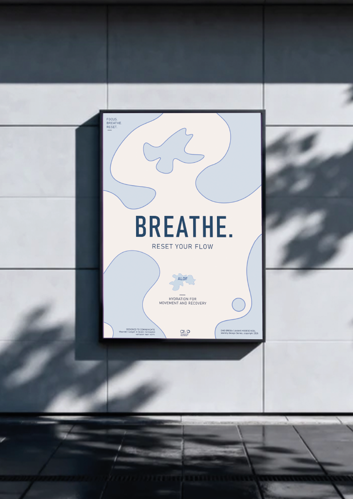
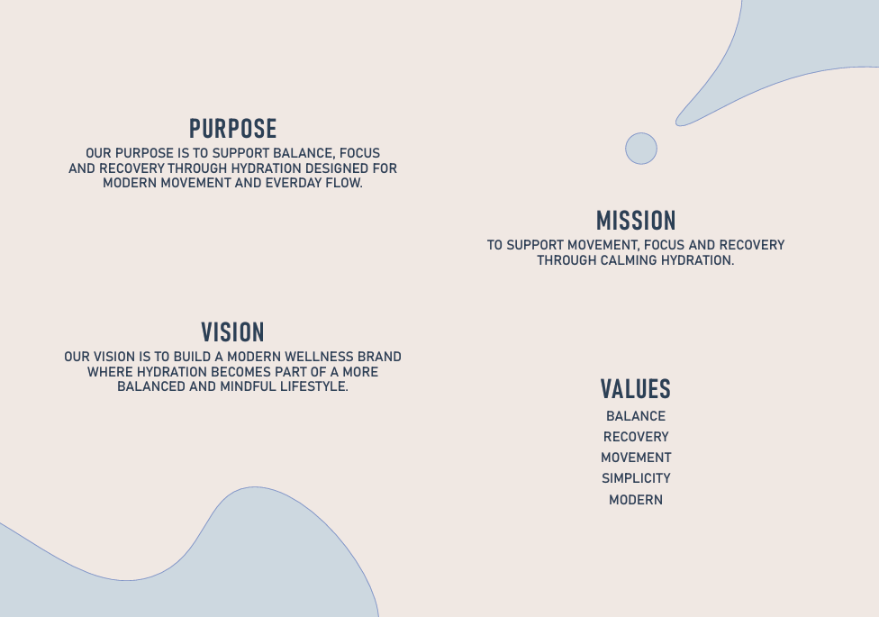

ALOF - Visual Identity
ALOF is a conceptual hydration brand focused on balance, focus and recovery. Starting from the idea of recovery water, I explored associations such as ice, water, cooling and freshness before developing the brand name ALOF. I developed a visual identity built around soft organic shapes, cool tones and bold typography, creating a calm and modern feel that reflects movement and recovery. I translated this visual language into packaging and poster applications, exploring how a consistent identity can work across different touchpoints.
Additional Visuals


Process & Reflection
The process began by exploring how light, texture and physical forms could shape the visual direction of ALOF. I translated these experiments into digital layouts, focusing on the balance between typography, imagery and the organic shapes I developed.
Throughout the process, I refined the visual system to keep the identity calm, clear and cohesive. The final result showed me how typography, composition and visual consistency can work together to create a recognisable experience.